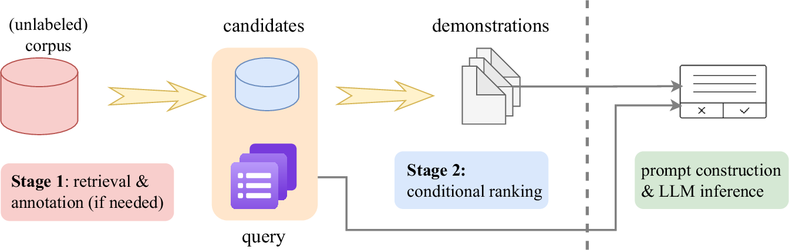
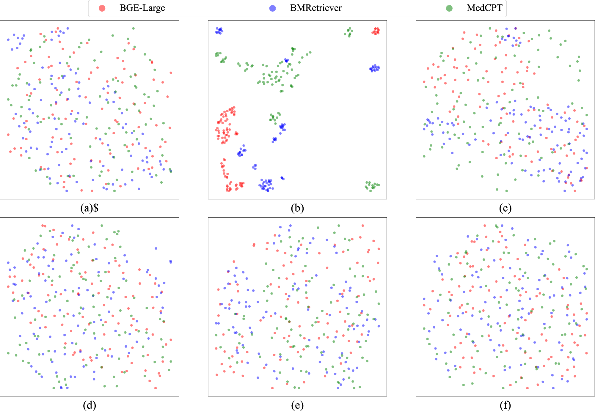
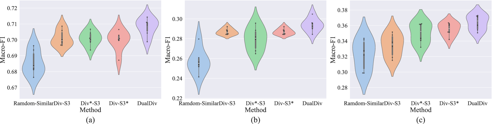
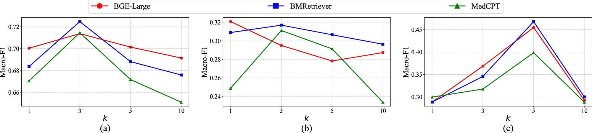
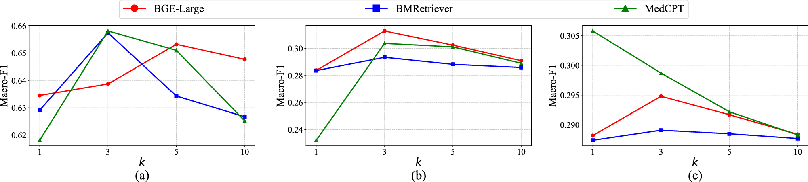
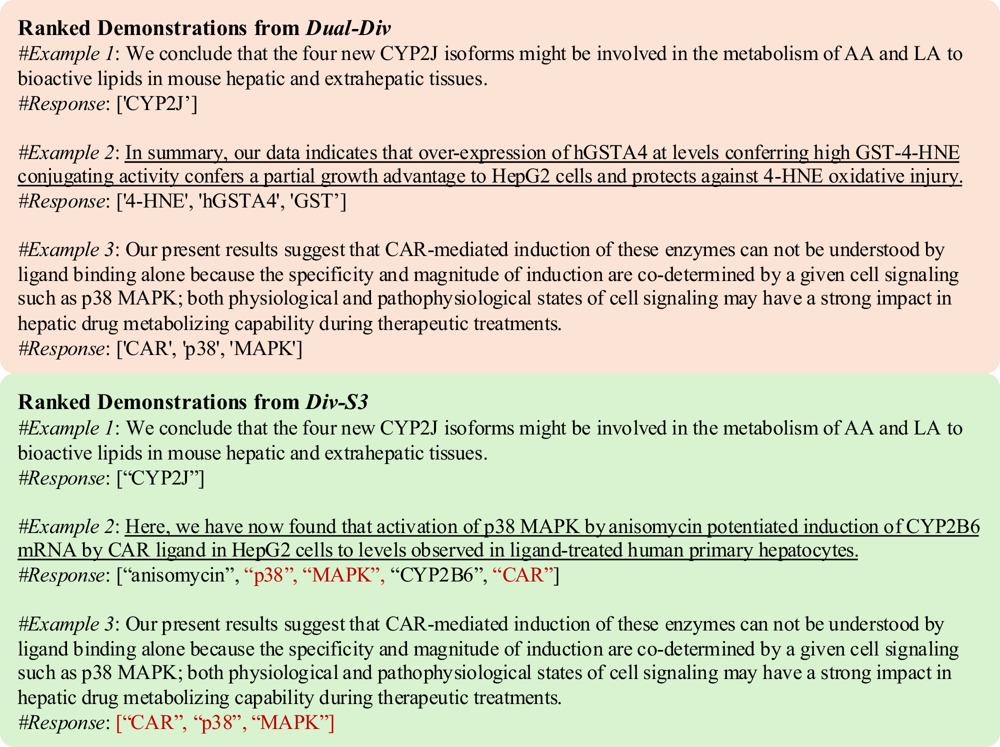

论文资料
Data-efficient biomedical in-context learning: a diversity-enhanced submodular perspective
已取得公开摘要，图文解读尚未完成
已取得公开摘要，图文解读尚未完成。取得完整资料并通过核验后，这个地址会更新为图文解读。
公开摘要
Recent progress in large language models (LLMs) has leveraged their in-context learning (ICL) abilities to enable quick adaptation to unseen biomedical NLP tasks. By incorporating only a few input-output examples into prompts, LLMs can rapidly perform these new tasks. While the impact of these demonstrations on LLM performance has been extensively studied, most existing approaches prioritize representativeness over diversity when selecting examples from large corpora. To address this gap, we propose Dual-Div , a diversity-enhanced data-efficient framework for demonstration selection in biomedical ICL. Dual-Div employs a two-stage retrieval and ranking process: First, it identifies a limited set of candidate examples from a corpus by optimizing both representativeness and diversity (with optional annotation for unlabeled data). Second, it ranks these candidates against test queries to select the most relevant and non-redundant demonstrations. Evaluated on three biomedical NLP tasks (named entity recognition (NER), relation extraction (RE), and text classification (TC)) using LLaMA 3.1 and Qwen 2.5 for inference, along with three retrievers (BGE-Large, BMRetriever, MedCPT), Dual-Div consistently outperforms baselines-achieving up to 5% higher macro-F1 scores—while demonstrating robustness to prompt permutations and class imbalance. Our findings establish that diversity in initial retrieval is more critical than ranking-stage optimization, and limiting demonstrations to 3-5 examples maximizes performance efficiency.
原图未改动。以下图注来自标注的来源，不据此补写摘要未报告的实验结论。
已取得的论文原图




原文图注与出处
Semantic embedding vectors from various retriever models on a ChemProt w/o \({\mathcal{D}}(S)\) , b DDI w/o \({\mathcal{D}}(S)\) , c HealthAdvice w/o \({\mathcal{D}}(S)\) , d ChemProt w/ \({\mathcal{D}}(S)\) , e DDI w/ \({\mathcal{D}}(S)\) , and f HealthAdvice w/ \({\mathcal{D}}(S)\) during optimization are reduced and projected by UMAP.
Wang, Jun et al.
原文图页 · CC BY 4.0



原文图注与出处
( a ) Macro-F1 performance on the ChemProt dataset under different values of K . ( b ) Macro-F1 performance on the DDI dataset under different values of K . ( c ) Macro-F1 performance on the HealthAdvice dataset under different values of K . Symbols: red circles = BGE-Large; blue squares = BMRetriever; green triangles = MedCPT.
Wang, Jun et al.
原文图页 · CC BY 4.0已取得的论文原图


原文图注与出处
( a ) Macro-F1 performance on the ChemProt dataset under different values of K . ( b ) Macro-F1 performance on the DDI dataset under different values of K . ( c ) Macro-F1 performance on the HealthAdvice dataset under different values of K . Symbols: red circles = BGE-Large; blue squares = BMRetriever; green triangles = MedCPT.
Wang, Jun et al.
原文图页 · CC BY 4.0
